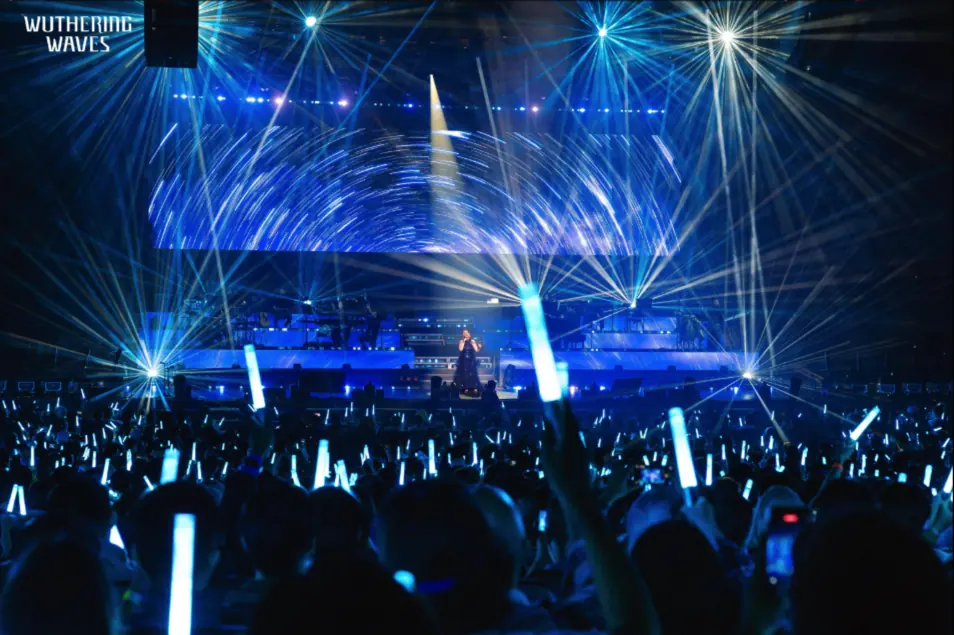

选颜色
用色轮选择喜欢的颜色。调整亮度，用作桌面灯光或拍照道具。


三节 AAA 电池给灯棒供电。控制板和电池仓都装在手柄内。图中是拆开的研究样机。

控制板接收无线指令。板上的芯片执行指令。实体按键用于切换内置灯效。

灯板用红、绿、蓝三种光混色。芯片改变各路亮度，得到不同颜色。白光使用独立通道。
网页
蓝牙
你的灯棒
灯棒内置了蓝牙。我分析了它的控制指令，并把这些指令做成网页按钮。在支持网页蓝牙的浏览器中，你可以选择自己的灯棒并连接。
你选好颜色后，浏览器把颜色指令发给灯棒。芯片读取指令，再调整灯珠。指令直接从你的设备发出，不经过网站服务器。
灯珠和屏幕的出光不同。网页会先调整混色比例，再发送颜色。这些比例来自实物试调，不同批次的灯棒仍可能有色差。
样机固件里有一套现场接收逻辑。它接收专用发射器的无线广播。一次广播可以让多支灯棒执行指令，无需逐支配对。
每支灯棒保存一个组号。广播可设置颜色、亮度和灯效。分组指令可以让不同组显示不同颜色。
收到有效场控指令后，固件会锁住按键。持续约 30 分钟没有收到此类指令后，按键恢复。
以上来自样机固件分析，尚未做现场无线验证。照片只展示演出效果。
现场发射器
无线广播
多组灯棒
用色轮选择喜欢的颜色。调整亮度，用作桌面灯光或拍照道具。
让亮度逐渐升降，形成呼吸效果。也可以让颜色连续变化。原生灯效由灯棒自行播放。延伸灯效由网页连续发送指令。
浏览器分析你提供的音频，把音量和节拍转成灯光变化。分析在你的设备上完成，本站不上传音频。